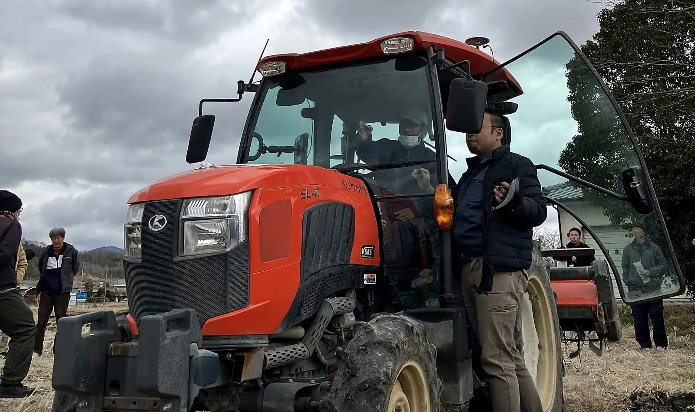
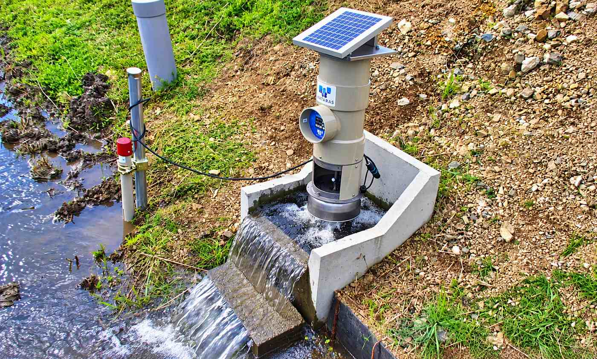

自動運転では農業は変わらない
─「水位管理」が導くスマート農業の本質

兵庫県加東市岡本地区。ここでは、酒米「山田錦」が育つ稲作地帯を舞台に、スマート農業の実証が進んでいる。
1. 自動運転だけでは、農業の課題は解決できない
GPSとビーコンを組み合わせた高精度測位技術により、トラクターやコンバインの自動運転は実現可能になった。農機メーカーの努力もあり、数センチ単位での制御が可能となっている。

だが、収穫の現場では、稲の倒れ具合、倒れる方向、湿気、土の柔らかさなど、目に見えない要素が作業効率に大きく影響する。コンバインが稲を詰まらせれば、作業は停止し、詰まりの解消は人の手作業に頼るしかない。
農機の操作には、長年の経験に裏打ちされた農家のノウハウが不可欠である。AIやセンサーでは代替できない領域が、農業には確実に存在する。
2. 「水位管理」こそ、スマート農業の本命
岡本営農互助会が注目したのは「水位管理」だ。

田んぼの水位は、稲の成長に直結する。水が不足すれば、雑草や粟が生え、稲の栄養分を奪う。特に岡本地区のように酒米の耕作に適した段々畑が多い地域では、上流のため池から下流の田んぼまで、効率的に水を配分する必要がある。
この課題に対し、水門の遠隔操作と水位センサーを組み合わせたシステムを導入しようとしている。数百万円規模の設備投資で、広範囲の水管理を自動化し、品質向上と工数削減を同時に実現することを目指す。
このソリューションは国に提案し、補助金事業として採択された。企画書を作成したのは、関西電力を引退し、現在はボランティアとして地域に貢献する技術者である。現場を知り、技術を知る人間だからこそ生まれた、実効性のある提案だった。
3. 農業を軸に地方創生のモデルケースを作る
岡本営農互助会の挑戦は、単なる技術導入ではない。高齢化が進む地域で、農業を軸に人と人が支え合う仕組みをつくり、若い世代や子育て世帯にも魅力ある暮らしを提供する、地方創生の一つの答えを出すことが狙いだ。
スマート農業は、効率化の手段であると同時に、地域の未来をつくる取り組みである。

この記事を書いた「とうじょうRMO」について
岡本・森・南山の3地区が協力し、農地を守り、地域資源を活かし、暮らしを支える農村型地域運営組織（農村RMO）です。スマート農業とコミュニティの力で、山田錦の産地を次の世代へつなぐ挑戦をしています。
この挑戦の目撃者になりませんか？
とうじょうRMOでは、スマート農業の活用を含め、地域資源を守り抜くための新しい仕組みづくりに挑んでいます。
私たちの活動の「いま」を、まずは公式LINEから覗いてみてください。